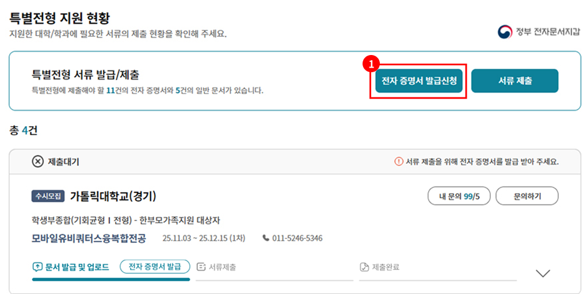
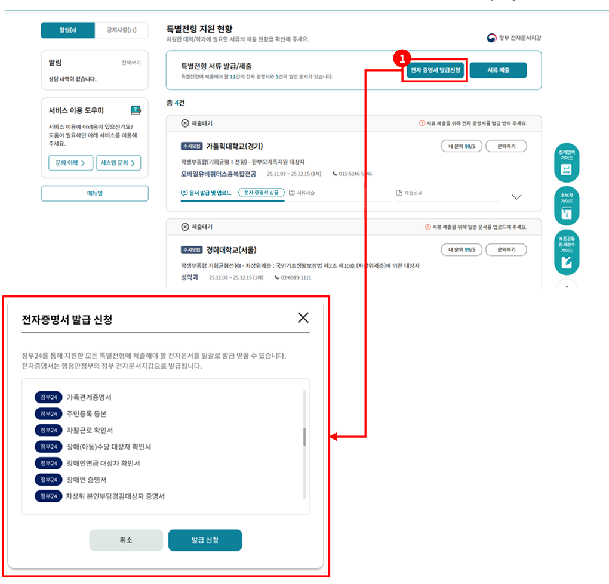
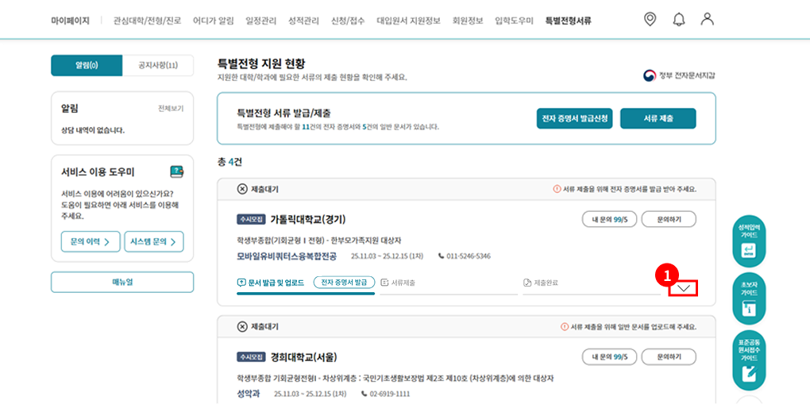
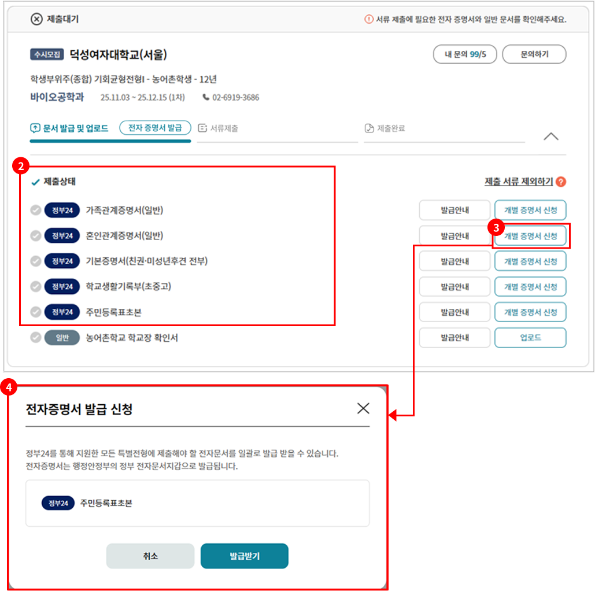
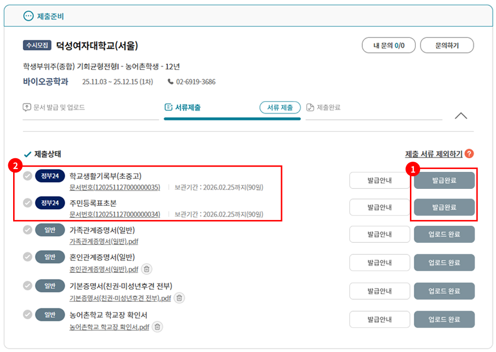

Step 1.
01.
지원 대학에 서류를 제출하기 위해 전자 증명서 발급을 위해 버튼을 클릭합니다.

Step 2.
01.
‘정부 전자문서 지갑’이 없는 상태로 ‘전자 증명서 발급신청’ 버튼을 클릭하면 지갑 발급 신청을 할 수 있습니다.
※ ‘정부 전자문서 지갑’ 신청 과정에서 전자 증명서 이용을 위한 약관 동의 및 간편 인증 단계를 거치게 됩니다.

Step 3-1.
01.
‘정부 전자문서 지갑’을 보유한 이후 ‘전자 증명서 발급신청’ 버튼을 클릭하면 지원 전형에 필요한 모든 전자 증명서를 일괄로 발급 받을 수 있습니다.

Step 3-2.
01.
특별전형 지원 현황의 지원 전형 카드 UI에 [V] 버튼을 클릭하면 UI가 확장되며 제출 서류 목록이 나타납니다.
02.
제출 서류 목록 중 정부24 배지로 분류된 대상은 전자 증명서를 의미하며 개별 발급을 받을 수 있습니다.
03.
개별 증명서 신청 버튼을 클릭하면 ‘전자증명서 발급 신청’ 팝업이 나타납니다.
04.
팝업에서 ‘발급 신청’ 버튼을 클릭하면 대상 서류만 개별 발급 받을 수 있습니다.


Step 4.
01.
전자 증명서 발급이 성공하면 대상 서류가 발급 완료로 변경된 것을 확인할 수 있습니다.
-
02.
발급 완료된 전자 증명서는 제출 서류 목록에 문서 번호와 보관 기간 등을 확인할 수 있습니다.
